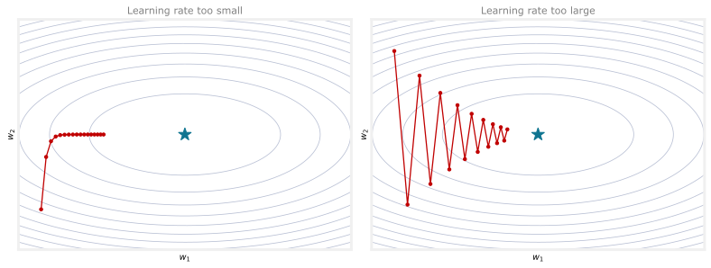
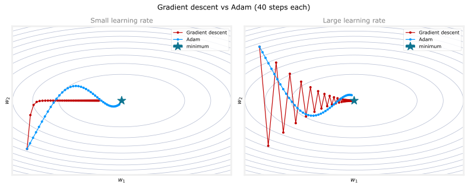
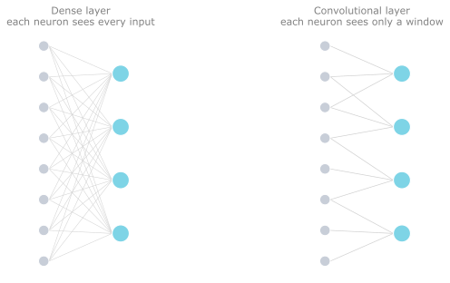
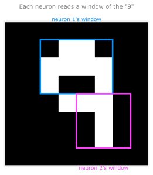
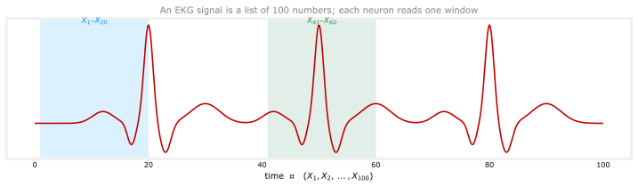
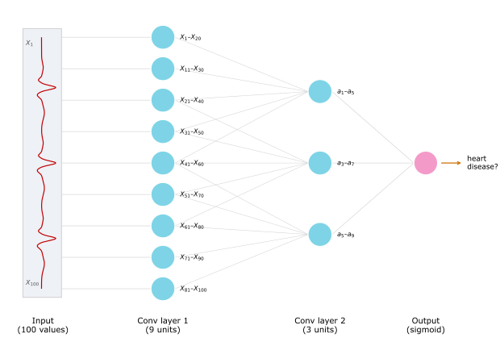

Additional Neural Network Concepts
machine-learning
neural-networks
The Adam optimization algorithm for faster training, and the convolutional layer, where each neuron reads only a window of the input.
Gradient descent is an optimization algorithm used everywhere in machine learning. It was the foundation of linear regression, logistic regression, and the early training of neural networks. But there are now optimization algorithms that minimize the cost function even faster than gradient descent. This page looks at one of them, Adam, which can train a neural network much faster.
Why Gradient Descent Can Be Slow
Recall one step of gradient descent. Each parameter \(w_j\) is updated by moving a little against the slope of the cost,
\[ w_j = w_j - \alpha \frac{\partial}{\partial w_j} J(\vec{w}, b), \]
where \(\alpha\) is the learning rate. How the learning rate is chosen makes a big difference, and a single fixed value is often a poor fit for the whole journey.
The plots below show the cost \(J\) as a contour plot, a set of nested ellipses whose center (the deepest point) is the minimum. Gradient descent starts at the dot and steps downhill.
Two things can go wrong.
- Learning rate too small (left). Every step points in roughly the same direction, but each one is tiny, so progress toward the minimum crawls. Watching this, you would wish the steps were bigger. Why not make \(\alpha\) larger automatically?
- Learning rate too large (right). The steps overshoot and the path oscillates back and forth across the narrow valley instead of settling. Watching this, you would wish \(\alpha\) were smaller so the path could move smoothly to the minimum.
Sometimes you want a bigger learning rate, sometimes a smaller one. What you really want is an algorithm that adjusts \(\alpha\) on its own.
Review Questions
1. In the contour plots, what does it mean when gradient descent takes many tiny steps all in the same direction?
TipAnswer
The learning rate is too small. The direction is fine, but each step is so small that reaching the minimum takes a long time. A larger learning rate would get there faster.
1. What does it mean when gradient descent oscillates back and forth across the valley?
TipAnswer
The learning rate is too large. The steps overshoot the minimum and bounce from side to side. A smaller learning rate would let the path settle smoothly toward the minimum.
The Adam Algorithm
The Adam algorithm does exactly that. It adjusts the learning rate automatically as training proceeds. If it sees the parameters creeping in the same direction with tiny steps, it makes the learning rate bigger. If it sees them oscillating, it makes the learning rate smaller.
On the same bowls as before, here is what that buys you. In the too-small case (left, where gradient descent crawls) and the too-large case (right, where it oscillates), Adam (blue) adapts its step size for each parameter and reaches the minimum in far fewer steps than gradient descent (red).

Adam stands for Adaptive Moment Estimation. The name is not worth dwelling on; it is simply what the authors called it.
One interesting detail is that Adam does not use a single global learning rate. It uses a different learning rate for every parameter of the model. If a model has parameters \(w_1\) through \(w_{10}\) plus \(b\), then Adam keeps 11 separate learning rates, \(\alpha_1, \alpha_2, \dots, \alpha_{10}\) for the weights and one more for \(b\).
The intuition for how it adapts each one is short.
- If a parameter \(w_j\) (or \(b\)) keeps moving in roughly the same direction, increase its learning rate \(\alpha_j\) so it goes faster that way.
- If a parameter keeps oscillating back and forth, reduce its learning rate \(\alpha_j\) a little so it stops bouncing.
The full details of how Adam computes these adjustments are beyond the scope of these notes. You may see them in a more advanced deep learning course. What matters here is the effect: faster, more robust training.
Review Questions
1. What does “Adam” stand for, and what is the one-sentence idea behind it?
TipAnswer
Adaptive Moment Estimation. The idea is to adjust the learning rate automatically during training, raising it for parameters that keep heading the same direction and lowering it for parameters that oscillate.
1. A model has parameters \(w_1, \dots, w_{10}\) and \(b\). How many learning rates does Adam use, and why?
TipAnswer
Eleven, one per parameter. Unlike gradient descent’s single global \(\alpha\), Adam keeps a separate learning rate for each of the 10 weights and for \(b\), so it can speed up or slow down each parameter independently.
Using Adam in TensorFlow
In code, switching to Adam changes just one thing. The model is defined the same way as before, and model.compile gets one extra argument naming the optimizer.
model = Sequential([
Dense(units=25, activation='relu'),
Dense(units=15, activation='relu'),
Dense(units=10, activation='linear'),
])
model.compile(
optimizer=tf.keras.optimizers.Adam(learning_rate=1e-3),
loss=tf.keras.losses.SparseCategoricalCrossentropy(from_logits=True),
)Adam still needs a default initial learning rate, set to \(10^{-3}\) here. In practice it is worth trying a few values, some larger and some smaller, to see which trains fastest. Because Adam adapts the rate on its own, it is more robust to that initial choice than plain gradient descent, though a little tuning can still help.
Adam typically trains much faster than gradient descent, and it has become the de facto standard for training neural networks. If you are unsure which optimizer to use, Adam is a safe default, and it is what most practitioners reach for today.
Review Questions
1. What single change turns the TensorFlow code from gradient descent to Adam?
TipAnswer
Add the optimizer argument to model.compile, setting it to tf.keras.optimizers.Adam(learning_rate=1e-3). The model architecture and loss stay the same.
1. Since Adam adapts the learning rate, does the initial learning rate still matter?
TipAnswer
It matters less than for plain gradient descent, because Adam adjusts the rate automatically and is more robust to the choice. Even so, it is worth trying a few initial values, some larger and some smaller, to find the fastest learning.
1. Adam is the recommended optimizer for finding a model’s parameters. How do you use it in TensorFlow?
Adam works only with softmax outputs, so a network with a softmax output layer makes TensorFlow pick Adam automatically.
The call to
model.compile()uses Adam by default.When calling
model.compile, setoptimizer=tf.keras.optimizers.Adam(learning_rate=1e-3).model.compile()automatically picks the best optimizer, so there is no need to choose one.
TipAnswer
c. Pass the optimizer explicitly to model.compile, for example optimizer=tf.keras.optimizers.Adam(learning_rate=1e-3). Adam is not a default, it does not depend on the output activation, and compile does not choose an optimizer on its own.
Dense Versus Convolutional
Adam was about training a network faster. This next topic is about a different design choice, the type of layer the network is built from.
Every neural network layer so far has been a dense layer, where each neuron takes as its input all the activations from the previous layer. Dense layers alone can build some powerful learning algorithms. But there are other layer types with useful properties, and the rest of this page introduces one of them to build intuition for what neural networks can do.
In a dense layer, the activation of a neuron, say in the second hidden layer, is a function of every activation value from the previous layer. For some applications a network designer may choose a different type of layer instead.
One such type is the convolutional layer. In a convolutional layer, each neuron looks at only a limited region of the previous layer’s outputs, not all of them.

Why would you want each neuron to see only part of the input rather than all of it? Two benefits stand out.
- It speeds up computation, since each neuron has far fewer inputs and weights.
- A network built from convolutional layers can need less training data, and it is less prone to overfitting. (Overfitting is covered in more detail alongside practical tips for using learning algorithms.)
A layer where each neuron looks at only a region of the input is called a convolutional layer. The researcher Yann LeCun worked out much of how to make these layers effective and popularized their use. A network with one or more convolutional layers is called a convolutional neural network, or CNN.
Looking at Image Regions
Picture the input \(\vec{x}\) as an image of a handwritten digit nine. A convolutional hidden layer would build its activations from small pieces of that image rather than the whole thing. The first hidden unit might look only at the pixels in one small rectangular region, a second unit at the pixels in a different region, and so on, each neuron responsible for its own window.

Review Questions
1. In a convolutional layer, what does each neuron take as its input, and how does that differ from a dense layer?
TipAnswer
In a convolutional layer each neuron looks at only a limited region, or window, of the previous layer’s outputs. In a dense layer each neuron looks at every output from the previous layer.
1. Give two benefits of convolutional layers over dense layers.
TipAnswer
They speed up computation (fewer inputs and weights per neuron), and they can need less training data and be less prone to overfitting.
1. The lecture covered a layer type where each neuron does not look at all the values of the input fed into that layer. What is that layer type called?
A fully connected layer
A convolutional layer
A 1D layer or 2D layer, depending on the input dimension
An image layer
TipAnswer
b. A convolutional layer. Each neuron reads only a limited window of the input, not all of it. A fully connected (dense) layer is the opposite, where every neuron sees every input.
One-Dimensional Example: EKG Signals
The image case above is two-dimensional. Convolutional layers work in one dimension too. A good motivating example is classifying EKG signals (electrocardiograms), the kind of task used to help diagnose whether a patient has a heart condition.
If you place two electrodes on your chest, they record the voltage of your heartbeat over time. An EKG signal is just a list of numbers, the height of that curve at successive moments in time. Say there are 100 numbers, \(X_1\) through \(X_{100}\), sampled along the curve.

Now build a convolutional layer over this signal. Instead of the first hidden unit taking all 100 numbers as input, let it look at only \(X_1\) through \(X_{20}\), a small window near the start. The second hidden unit looks at a different window, \(X_{11}\) through \(X_{30}\); the third at \(X_{21}\) through \(X_{40}\); and so on, each window sliding a little further along, until the last unit looks at \(X_{81}\) through \(X_{100}\) near the end. That gives nine units in this first convolutional layer, each reading its own window.
The next layer can be convolutional too. Its first unit might look at just the first five activations of the previous layer, \(a_1\) through \(a_5\); its second at \(a_3\) through \(a_7\); its third at \(a_5\) through \(a_9\). Finally, a single sigmoid output unit reads all three of those activations and makes the binary classification: heart disease present or absent.

This network has a convolutional first hidden layer, a convolutional second hidden layer, and a sigmoid output layer. With convolutional layers you get many architecture choices, such as how wide each neuron’s window should be and how many neurons a layer should have. Choosing these well can produce networks that beat dense layers on some applications.
Review Questions
1. In the EKG example, the first convolutional layer has nine units. What does its third unit read as input?
TipAnswer
Only the window \(X_{21}\) through \(X_{40}\), a slice of the 100-number signal, rather than all 100 values. Each of the nine units reads its own overlapping window.
1. What kind of layer is the EKG network’s output, and what does it decide?
TipAnswer
A single sigmoid unit. It reads the activations of the last convolutional layer and makes a binary classification, whether the patient has a heart condition or not.
New Layer Types Are an Active Research Area
You do not need convolutional networks for anything that follows; the goal here is just the intuition that neural networks can have layer types beyond the dense layer. In fact, a lot of neural network research, even today, is about inventing new types of layers. Cutting-edge architectures you may hear about, such as the transformer, LSTM, and attention models, come from researchers designing new layers and plugging them together as building blocks to form more complex and more powerful networks.
Review Questions
1. Name one reason researchers keep inventing new layer types.
TipAnswer
Different layer types have different properties, and combining new kinds of layers as building blocks can produce more powerful networks. Transformers, LSTMs, and attention models are all examples of this ongoing work.